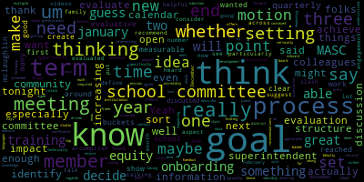
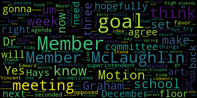
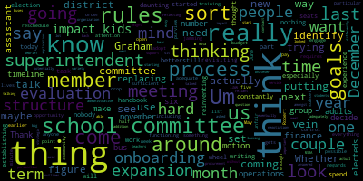
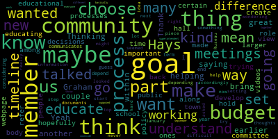
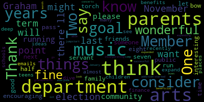
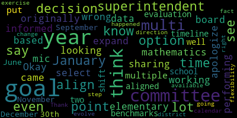

[hGxT3FthToQ_SPEAKER_02]: . If we may please call the roll. Would anybody like to start us off on goals? Member McLaughlin, all you.
[McLaughlin]: Well, I think that, um, you know, the point of having goals was that so that we could identify as in, it says in the, in the MASC, MASS, um, conference handout so that we can identify to the community what our work is, what our goals are and to, be able at the end to show some evaluative process about how we attended and reached our goals, much like the superintendent. And so that our goals are aligning with the superintendent's goals and that we're being very clear on what our roles as school committee members are. And again, how we can create measurable goals so that we can show at the end of a, a term or session, depending on what the committee decides, how we achieve those goals that we said, or whether we achieve the goals that we said, or whether they need to be restructured. So I really wanted to open a discussion based on the MASC recommendations for setting goals for school committee around what those could be. And, you know, I think that they are very clear about not setting many, you know, setting, you know, between one and three goals and, you know, and thinking that it could be, you know, sensibly, for the either the school year or since we're so far into this school year it could be january to january sort of leave it open for discussion with the colleagues thanks oh sounds great thank you member mclaughlin so i know i mean i can speak from the chair with regards to setting a process for the evaluation i think that meeting went really
[Lungo-Koehn]: well last week, so I'm glad we took that hour to, and I thank the committee members that stepped up and are gonna serve on that committee. It should hopefully be a smooth process this spring, early summer. So that was definitely a goal we accomplished last week. But moving forward, does anybody else have any ideas of specific goals?
[Graham]: Member Graham? I think in the same vein of establishing a better process for the superintendent's evaluation. Like I see part of that work being like writing down what we did so that the committee is not constantly reinventing the wheel around what we're doing and how we're doing it. Um, especially, you know, there is an election coming up. There's nothing to say that all of us will still be here in our seats a year from today. And I think when you think about onboarding new people to the school committee, it's a really daunting task. So, you know, in the same vein of putting some structure and process around the superintendent's evaluation, I think putting some thought into like, what would onboarding for new school committee members look like, We've all sort of been through it in our own way. But I think nobody has had the same experience. And we actually started to identify some rules around that in our rules handbook last year. So I think we should You know, maybe spend some time revisiting like what those rules were particular to onboarding school committee members and really think about. Whether they're sufficient. Because we haven't had to we haven't had to use them, but we also were trying to adopt like 100 rules at the same time so. maybe there's an opportunity to say, if we're just going to look at that set of subset of rules, like, is it enough? Is there adequate training around the open meeting law and Robert's rules of order? And if there isn't, can we figure out what we want to do in those regards? So I think from a like functioning of the school committee, that would be something that is on my mind. But I think, you know, to the point of, district goals or goals of things that we as a school committee have purview over. I have a list of things that I want to see us think about including an earlier budget process that is not us jamming five meetings into a week and a half at the last possible minute. I think it's really unfair to the community when we do those things because it really requires for anyone who wants to pay attention for them to drop everything, reschedule their lives and engage, which is just very hard to do when it gets to be May and into June So that's one thing that's on my mind. Again, in terms of things we can control from a school committee perspective, a couple of other things I'm thinking about are having an actual debrief about our negotiations in terms of reflecting back on the process that we went through and starting to think for ourselves what we would do differently next time, whatever that might be. I think we need to talk about replacing our assistant superintendents of finance and operations. Um, and then if I think about things that really, I didn't hear what you said on the last replacing our assistant superintendent of finance and operations. Um, and then if I think about things that impact kids, which I think is, you know, it's easy to sort of sit here amongst adults and, um, talk about a lot of things that impact adults without talking about things that impact kids. But I think a couple of things that come to my mind is, as we've talked about before, does our administrative organization structure support students and teachers adequately? That's a question we've asked and really not answered in a variety of ways over the last couple of years. And the other big thing that I think we have coming up and looming in addition to our MSBA application is our bus contract and really thinking about expansion of our bus service and eventually potentially being able to not be so reliant on the mpta. All of those things start with a procurement that sort of outlines what those goals are so we are not locked into a set number of buses that can't meet those needs. I think some strategic thinking around that is really important. And I think the other the other conversation that is a continuing one that is hard to a hard nut to crack is the, you know, expansion or, or lack of expansion of the afterschool program and whether there are additional things we can be trying there. So I think there's like sort of two buckets for me. One is about our structure and our process. And the other is about like things that actually impact kids in the district and what that looks like. So those are some of the things that I'm thinking about and, if we're going to take like a six month view, like almost none of those things can be done in six months. So it's, you know, I think we'd have to decide on what that term is, like what that length of time is before, um, we decide what the goals are and then, you know, figure out like, I think there's always 99 things to do and how do we come up with like the right number of things that we're going to say are our focus, um, so that we can clearly communicate that, uh, to the, people who come to meetings, to the people who don't come to meetings, and everybody else. Thank you. Thank you, member Graham.
[Lungo-Koehn]: Yeah. Member McLaughlin and member Hays. And member Kreatz. Member Mr. Stone, I'm sorry.
[McLaughlin]: Yeah, no, I appreciate that. And I think thinking about buckets is a really good idea. And so I would agree with structure and process being one of the buckets. And then I would say, I guess the other would be impact. And I think we really should be thinking about the evaluative process for ourselves as well. So first, I think we need to set a term of what the goal term would be, but then also, you know, what is the process at the end of the term for evaluation in terms of whether we've reached the goals or whether we haven't. So those are other things that I think we should be thinking about. And then in terms of, you know, structure and process, I think certainly the onboarding is something that's been discussed among colleagues as well. You know, the need for an onboarding process, Um, particularly for, you know, especially with a new election coming up and, you know, folks who, um, don't have institutional knowledge, what have you being able to have some onboarding process and also, um, the training that the MASC offers. So, you know, um, I think technically we're required each as school committee members to do the training. I'm not sure what that followup process is in terms of whether people have actually done the training or not, um, with MASC and how we follow up on that. So I would say, you know, both the onboard in terms of structure and process, but the onboarding and ensuring that the professional development slash training is actually happening for each member would be something that I would put forward. And then in terms of impact, I think as we're thinking about district goals as a whole, I think we've heard a lot of talk about equity and we've heard a lot of talk about family engagement. And I'd really like to think about those two aspects of impact. How are we actually increasing? Are we increasing? How are we thinking about increasing? What are we doing to ensure family and community engagement and equity across that? And I think there's very data driven ways to measure those things. And I think setting a benchmark for those would be really helpful. Thanks.
[Hays]: Thank you. Member Hays. Yeah, I had a couple of things, too. Thinking about the budget process, as member Graham was saying, I think another thing that would be great for us to do within that earlier budget process is how can we bring the community in more on helping us develop the budget and hopefully also as an educational process for the community to understand how we make the budget and, you know, decisions that have to be made, I think that's important for the community to be a part of. And then as a, that is a part of maybe a larger goal is our role in educating the community about some of these processes and what we do, what it means to set policy. I'm trying to think of some other ones. We've talked about these kind of along the way among ourselves, maybe, maybe at meetings, we've talked about how there are certain things where we could hold maybe town hall meetings that we could educate the public, or maybe we create videos that could go on our school committee webpage that people could refer back to any time when they want to understand some of the things that we do. So again, that kind of view of us as a body that also communicates with and educates the community.
[Kreatz]: Great, thank you. Member Kreatz, then Member Mustone. Hi. Yes. Um, so I, you know, I just jotted down a few goals and a lot of them are similar to what some of my colleagues have talked about. Um, one of the goals that I thought was important, which we are working on is, you know, improving the superintendent rating process. We just met about that. And I think that could be one of our goals. It's something that we could, accomplished like within the next six months. So I was thinking that might be, you know, one of the goals that we could do, cause we are working towards that. It is something that smart goal it's attainable. We could do it within the six months. Um, another, um, piece would be the communication, which is also being addressed. It's on everybody's minds and it's on everybody's goal list. Um, it's being addressed with the superintendent, you know, improving the communication as part of that, would be something that we did make a motion about. I don't know if it's something we could accomplish, would be looking into improving the internet service at Medford High School. We already have a motion in for this, but it's something that's important to all of us during the communication process. I don't know for sure if it's obtainable within six months, but it's something that, you know, we made a motion, we're looking into it. You know, there's no promises, but we are looking into it. Um, and then along with that would be like improving the climate at Medford high school, which is also being worked on. And it's just something that's on everybody's minds. But, um, at the same time, you know, considering all the schools, K to 12, not just Medford high school, but all the schools, Um, cause I know we, in some of the messages we got, um, you know, some questions were, Oh, is this going to be done for all the schools? So, you know, that's something that, you know, could be done maybe not within the six months, but you know, within the year. Um, and, and then my question would be for tonight is, you know, are we, are we making a decision on how many goals, like whether it's going to be one, two, three. I think if I was to look at the superintendent's goals, you know, she has the three, you know, high level goals and then the actions that fall underneath. So I was, you know, I just, I wasn't sure exactly what we were doing at tonight's meeting, but thank you. Thank you, members.
[Mustone]: Thank you. Two things. One is to Member Graham's point about that we might not all be there because there'll be an election in November. I want to say this will be my last term. So for community members and parents out there, please consider running or consider encouraging friends and family to run. It's been a An interesting seven and a half years and I think eight years is a good time for a public servant to bow out and let pass on the torch to someone else. And the next one is that recently we've had many emails about arts and music and the benefits to children and teens. So I think I'd like a goal to be almost a a deep dive into our finance department and see if there's places we can expand or ideas that other schools are incorporating that are successful that we could look into. But in addition, I was able to go to two of the concerts in January. I don't even know what month we're in, but they were wonderful. And the parents all there and grandparents all had such wonderful things to say about the fine arts department and the music. And I know the music department has started the jumpstart camp and has expanded. And I think it's been beneficial to everyone. So just, I think expanding fine arts would be a goal for myself and a lot of parents. So thank you.
[hGxT3FthToQ_SPEAKER_02]: Thank you, member Stone.
[Lungo-Koehn]: I, if you don't, if nobody has any comments right this second, if I can speak from the floor, I think that's a, um, great goal member of stone. I know that, um, one parent and I think dr. Cushing might've, I've looped him in or he was on the email, um, had mentioned, you know, what we're doing, make, making changes at the high school and that it really should be art focused and in mental health support, which we know we're know we're also providing. And I wrote back, I said, right now it's about safety and keeping our kids safe and do what we can to make sure they feel safe. But I, so I agree, but I also agree, you know, now that I didn't, I said, I agree that we need the arts in our schools and to expand and to help our students grow in that field. But yes, we need to do both at the same time. So I think that's a really important piece to this.
[hGxT3FthToQ_SPEAKER_02]: member mclaughlin?
[McLaughlin]: I think to member kretz's point in terms of thinking about the time frame for this meeting now, maybe even setting some ideas about what we can accomplish in this meeting in one hour and maybe what we can accomplish is how many goals do we want to set you know, when can we revisit what the goals will be specifically, maybe taking some time to think about this for the next meeting, what, you know, say your top three goals are of the things that were discussed and how we might make those measurable would be something that I would put out and suggest I can make a motion in a minute. But I also wanted to say to member Hays' point around videos. I think that that's a really interesting point. And I think that the studio is incredibly underutilized, particularly for getting information out to the community. Ideally, I would love to see videos that were in multiple languages, being able to describe what the school committee does and how we do what we do and how to contact us, I think could be super helpful. So I really liked that idea. And I guess across the board, and this is sort of the equity piece that I'm talking about folding into each of the goals is how is this information being conveyed and relate to folks that might not typically get the news or the information and how, you know, how is, whether it's through translation or interpretation or access. So for any of the goals that we're thinking about, I would, I would ask my colleagues to be considering equity as an underlying aspect of those goals. And so I would make a motion that maybe in tonight's meeting, we can set the number of goals that would like to consider and perhaps a timeline by which to one, name those goals and two, evaluate those goals. Yeah, so the motion is for tonight's meeting to identify the number of goals that we'll create for the school committee and the date at which the goals will be identified. and then the term in which the goals will be accomplished slash evaluated.
[hGxT3FthToQ_SPEAKER_02]: Just need a second. Second. Motion by Member McLaughlin, seconded by Member Kreatz. Roll call. All those in favor? All those opposed? Motion passes. Member McLaughlin?
[McLaughlin]: So I guess to that end, I would recommend maybe between two to three goals. I guess I might say three goals, but I'd be open to my colleagues' suggestions.
[Hays]: Member Hays? I guess it would depend on what we're considering to be that goal timeline or the term, because how many we choose. If we're only going to the end of this year, then we want to choose accordingly. But if we're going to start now and go until next January, we might want to choose more goals.
[Lungo-Koehn]: I think we, from the chair, I think we should do the full year, especially if we have multiple meetings on goals, in my opinion, but member Graham.
[Graham]: I was going to say the same thing. I mean, we are here together as a group through December. So I think it makes sense for us to identify what we think we can reasonably accomplish as a group of electeds before those electeds change.
[Lungo-Koehn]: Yes. So 11 months with the goals. Member Ruseau.
[Ruseau]: I have to respectfully disagree. I think brand new school committee members are wholly incapable of engaging in this conversation with the amount of new knowledge that they have. And while I can't remember the specifics, my understanding of goal setting that I feel like I went to a session on this at the conference at one point was that they should not be to like the day of the elect or when people are sworn in because They're just, it's sort of like your first budget. We all remember our first budget being like, is this for real? And no offense meant to anybody, but the process is completely illogical. And I just don't know that right out of the gate, a new member is going to be able to set goals. And we have a relatively new member who might be able to provide some her own thoughts on that, if she's willing. Yeah.
[Lungo-Koehn]: Member McLaughlin.
[McLaughlin]: Yeah, I think I hear the concern regarding that. I think on one hand there needs to be enough time to reasonably define the goals and enough time to achieve them and enough time to evaluate them. So I do think the 11 month process makes sense, especially starting now. This is something that we've been talking about over a few meetings in terms of setting the goals. So I think that we could define a process by which, you know, this, these goals are our first set of annual goals, if you will, are evaluated and that, and then for the January term, potentially let the new school committee decide what their calendar would be for their goals, whether they want to, you know, have end of February to end of February, the following year, since the two year terms are very different and there'll be consistent over that time. But I would, I would, lean towards having the 11 months to be able to really meaningful meaningfully address the goals.
[hGxT3FthToQ_SPEAKER_02]: Remember some.
[Ruseau]: I just had a thought that regardless of when we and them. We will be. We haven't discussed when we we've certainly set when they would end and we have talked about maybe January February we set new ones but when is the planned time to actually meet to evaluate ourselves? Because I think when, if you have new school committee members, one, two, three, whatever, and they're sitting down and they want, they want, they're going to want to talk about the new goals. And are they capable of evaluating the current school committee and meeting the goals that we wrote today? Which, I mean, I realized that sort of is, you know, other than the mid, if we do one year at a time, the midterm one, like between elections, we obviously will be able to do that because we're evaluating ourselves. But I'm just thinking like, you know, if we had one or more new members, what is the timeframe we're expecting the new committee to actually evaluate these goals? Is it first meeting of the body January? Are we going to be like in, June, evaluating a previous year's goals, having set new ones. That's my question, concern. I don't have thoughts on the right way to do it, but it's a concern.
[Lungo-Koehn]: All right, Mayor. Dr. Edouard-Vincent has her hand up, and then Member McLaughlin.
[SPEAKER_02]: for September. Set it up any way you want it to be, but give yourselves a check on time to just see how you're making progress toward the goals, and then set it as well for yourselves. I don't think June, January to December are the calendar year, but that's, that could work, because even if the elections take place, at the top of the year, as opposed to the mid-cycle. It's just a suggestion.
[Lungo-Koehn]: Yep. And so the calendar year, then you can have a meeting in December and say, this is what we've accomplished, this is what we need to keep on the goals, and maybe even make suggestions for the new committee that will start in January. I like that idea. Who did I say was next? Member McLaughlin, then Member Graham, then Member Hays.
[McLaughlin]: to the superintendent's point, that was what I was going to suggest. I don't think that a new committee should evaluate the old or the previous committees work, especially with new members. So I would do, I would recommend a calendar year, January to December. And I do like the idea of quarterly, even quarterly, frankly, check-ins. So, you know, mid-year, you know, you know, semi-annually is fine, but I think even quarterly, so that we're, you know, at least having once on the agenda of goals, and it could be under good of the order or whatever, you know, just that we are doing a check-in. to see where we are at is a great idea. I think calendar year would be great.
[Graham]: I would like to make a motion that we look at our goals timeline to conclude on november 30 so there is the month of december for us to do that evaluation reflection and perhaps sending some information forward. So I'd like the idea of the timeline officially concluding in November so that we then can use December to sort of tidy things up for the next committee, whoever they are when they come in.
[McLaughlin]: Second.
[Graham]: Before the motion is called, member Hays.
[Hays]: I just wanted to, you know, member Ruseau had asked if I had any thoughts about it. I do think it would be a lot for a new member to step in and try to help set goals for something they've never been a part of. So as for that piece of information, I mean, I do think that would be hard and depending on how many new members we have, that could make it a really difficult process. The other thing I'm wondering is, you know, when I looked through all these documents, it seemed the idea of all the goal setting is from the top down, right? That our goals should the superintendent's goals coincide with the goals all the way down. So if everyone else is working on basically a september to june, maybe it doesn't make a difference, but I just wanted to throw that out there that if we're working on a different timeline, but all of our goals are supposed to work together, you know, does that make a difference?
[Lungo-Koehn]: I think it makes sense to set our goals after the superintendent sets hers, who's in the schools probably 80 hours a week and knows the ins and outs versus us that are part-time, but try to stay involved as much as we can. Member, Dr. Edward-Vincent.
[Edouard-Vincent]: I think I had the wrong mic. It's not working. Okay. I apologize. What I was just sharing with the committee was that goals can be multi-year goals and that when I originally came on board, I had a multi-year goal looking at elementary mathematics at that point in time, that was a decision, was a data informed decision based on where we were performing. So if the committee were to select a goal that could expand over multiple years, we could just put in benchmarks to say at this point in time, this is what we would like to see. And then, you know, year two, this is you know, what else we would like to see. So there are a lot of options of multi year goals. And even if the superintendent's evaluation timeline had to shift to be aligned with the school committees, that that's an option as well, that it doesn't have to be September to June, it could be January to November 30th or January to December and say, this is what happened during the calendar year. So there is a lot of, I think, flexibility available, but I think the fact that you as a committee are going through this exercise to think about your own goals and how they align to the superintendent's goals, even if they change and they evolve, and how they align to the district's goals, that that is a step in the right direction. Thank you.
[Lungo-Koehn]: Thank you, Dr. Edward-Vinson. So it looks like we have a motion on the floor to have goals be set from approximately now until November, with a meeting in December to tidy things up and go over the goals. On the floor by Member Graham, seconded by Member McLaughlin. All those in favor? Aye. All those opposed? Motion passes. And Mayor? Yes, Member McLaughlin.
[McLaughlin]: I'd like to make a motion that we set three goals for the term.
[Lungo-Koehn]: Motion by Member McLaughlin that we try to set three goals. Seconded by Member Hays. All those in favor? Aye. All those opposed? So three goals from now until November. with a meeting to tidy up things in December. And then we're gonna go through what was listed today from communications to budget to replacing our assistant superintendent of finance and operations, MSBA, resubmitting that application in April, MBTA, afterschool programming, MCAS training, equity, family engagement, climate at Medford High School and the rest of the schools, expanding fine arts. We're gonna digest that all and come back the next in a few weeks to um hopefully in between we will have things written out and we can try to finalize our goals in a good 30-40 minutes.
[McLaughlin]: Sound great. I was just going to ask if we could get a list of the proposed goals from tonight so that we can all have a opportunity to look through them and consider them for the three and then if there's you know ones that anyone wants to add or flesh out they can and then it um Do folks feel like the next meeting is reasonable for the next opportunity to decide on those, or?
[Lungo-Koehn]: That would be two to three weeks, I think that's reasonable. Okay. Would you want it on the agenda so we don't have to, okay, we'll put it on the agenda, hopefully it can come prepared and ready so that we can move approval on three goals at our next regularly scheduled meeting.
[McLaughlin]: And Mayor? Member McLaughlin. And then we just need to decide finally on an evaluation process for that, for the goals in November. So we said we'd discuss November, have a discussion in December, but I think we need to establish some sort of process by which we're evaluating.
[Lungo-Koehn]: So we will have on the agenda to identify goals and establish a process for evaluation. Okay. And I think the superintendent and myself took notes at this meeting, so one of us can and Marky I'm sure did too, so we can write them up. Yes, is there a motion to adjourn?
[McLaughlin]: Motion to adjourn.
[Lungo-Koehn]: 10 minute break before our six o'clock meeting by Member McLaughlin, seconded by Member Graham. All those in favor?
[McLaughlin]: Aye.
[Lungo-Koehn]: All those opposed? Motion passes. We'll be back at you in 20 minutes.
|
total time: 8.83 minutes total words: 1492  |
total time: 4.21 minutes total words: 740  |
total time: 6.35 minutes total words: 1041  |
total time: 2.48 minutes total words: 459  |
|
total time: 2.3 minutes total words: 446 |
total time: 1.29 minutes total words: 244  |
total time: 2.26 minutes total words: 373 |
total time: 1.6 minutes total words: 247  |
{kind=link}
{kind=link}
{kind=link}
{kind=link}
{kind=link}
{kind=link}
{kind=link}
{kind=link}